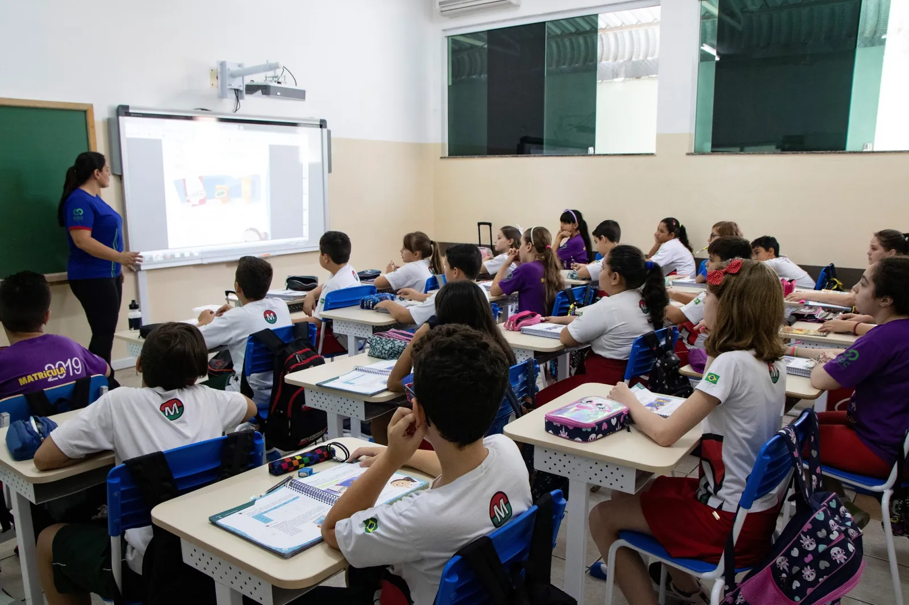

Início / Diário de Bordo
Acompanhe nossa jornada.
Projetos, bastidores, eventos, notícias e ciência do oceano. Tudo o que está acontecendo a bordo do Instituto Gaia Soul.

 Projetos
Projetos Eventos
Eventos Bastidores
Bastidores Notícias
Notícias Ciência & Oceano
Ciência & Oceano
ProjetosProjetos, histórias, oportunidades e conteúdos sobre o oceano direto no seu WhatsApp.